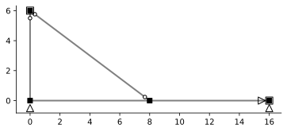
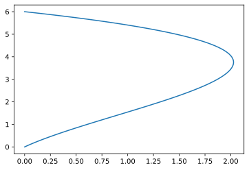

Problem 3
import ema as em
import matplotlib.pyplot as plt
import numpy as np
%config InlineBackend.figure_format = 'svg'
mdl = em.rModel(2,3)
mdl.material('default', 1000)
mdl.xsection('default', 10000000, 50)
tsec = mdl.xsection('truss', 20, 1)
n1 = mdl.node('1', 0.0, 0.0)
n2 = mdl.node('2', 8.0, 0.0)
n3 = mdl.node('3', 16., 0.0)
n4 = mdl.node('4', 0.0, 6.0)
a = mdl.beam('a', n1, n2)
b = mdl.beam('b', n2, n3)
c = mdl.beam('c', n1, n4)
d = mdl.truss('d', n2, n4, xsec=tsec)
n2.p['y'] = -20
mdl.hinge(c, n4)
mdl.roller(n1)
mdl.fix(n3, ['x', 'y', 'rz'])
mdl.fix(n4, ['rz'])
# mdl.numDOF()
mdl.DOF = [[5, 6, 1], [5, 2, 3], [5, 7, 8], [4, 6, 9]] # Manually number DOFs
# em.utilities.export.FEDEAS(mdl)
9
fig, ax = plt.subplots()
em.plot_structure(mdl, ax)
<matplotlib.axes._subplots.AxesSubplot at 0x2094a461a88>
svg
|
$1$ |
$2$ |
$3$ |
$4$ |
| $P_{1}$ |
50000.00000 |
-4687.50 |
12500.0 |
4166.66667 |
| $P_{2}$ |
-4687.50000 |
3063.75 |
0.0 |
960.00000 |
| $P_{3}$ |
12500.00000 |
0.00 |
50000.0 |
0.00000 |
| $P_{4}$ |
4166.66667 |
960.00 |
0.0 |
1974.44444 |
Uf = em.analysis.SolveDispl(mdl)
Uf
|
$U_{{}}$ |
| $1$ |
-0.002494 |
| $2$ |
-0.014149 |
| $3$ |
0.000624 |
| $4$ |
0.012143 |
Compatibility
A = em.A_matrix(mdl)
V = A.f@Uf
V
|
$V_{{}}$ |
| $a_1$ |
0.000000 |
| $a_2$ |
-0.000726 |
| $a_3$ |
0.002392 |
| $b_1$ |
0.000000 |
| $b_2$ |
-0.001145 |
| $b_3$ |
-0.001769 |
| $c_1$ |
0.000000 |
| $c_2$ |
-0.000470 |
| $c_3$ |
0.002024 |
| $d_1$ |
-0.001225 |
mdl.redundant(b, '3')
mdl.redundant(d, '1')
B = em.B_matrix(mdl)
---------------------------------------------------------------------------
LinAlgError Traceback (most recent call last)
<ipython-input-10-5ef0eae70dd5> in <module>
----> 1 np.around(B.barx,5)
~\OneDrive\400_box\Python\myPackages\ema\matrices.py in barx(self)
550 nx = len(self.model.redundants)
551
--> 552 Bbarxi = self.barxi
553
554 Bbarx = Structural_Matrix(np.zeros((nQ,nx)))
~\OneDrive\400_box\Python\myPackages\ema\matrices.py in barxi(self)
541 def barxi(self):
542 Bx = self.f.x
--> 543 Bbarxi = self.bari @ -Bx
544 Bbarxi.column_data = Bx.column_data
545 return Bbarxi
~\OneDrive\400_box\Python\myPackages\ema\matrices.py in bari(self)
568 @property
569 def bari(self):
--> 570 return self.i.del_zeros().inv
571
572 @property
~\OneDrive\400_box\Python\myPackages\ema\matrices.py in inv(self)
212 @property
213 def inv(self):
--> 214 mat = np.linalg.inv(self)
215 transfer_vars(self, mat)
216 mat.row_data = self.column_data
<__array_function__ internals> in inv(*args, **kwargs)
~\Anaconda3\lib\site-packages\numpy\linalg\linalg.py in inv(a)
544 a, wrap = _makearray(a)
545 _assertRankAtLeast2(a)
--> 546 _assertNdSquareness(a)
547 t, result_t = _commonType(a)
548
~\Anaconda3\lib\site-packages\numpy\linalg\linalg.py in _assertNdSquareness(*arrays)
211 m, n = a.shape[-2:]
212 if m != n:
--> 213 raise LinAlgError('Last 2 dimensions of the array must be square')
214
215 def _assertFinite(*arrays):
LinAlgError: Last 2 dimensions of the array must be square
ker = B.f.c.ker
np.around(ker,4)
Find element forces
---------------------------------------------------------------------------
AttributeError Traceback (most recent call last)
<ipython-input-11-b08c858beddb> in <module>
----> 1 Q = K.s@V
2
3 Q
AttributeError: 'Stiffness_matrix' object has no attribute 's'
em.plot_U(mdl, Uf, ax, scale=100, chords=False)
x = np.linspace(0, c.L, 100)
v_tags = [c.tag+'_2', c.tag+'_3']
v = [V.get(v_tags[0]),V.get(v_tags[1])]
y = c.Elastic_curve(x, v, scale=1000, global_coord=True)
plt.plot(y[0], y[1])
[<matplotlib.lines.Line2D at 0x2094b8c7d08>]
svg